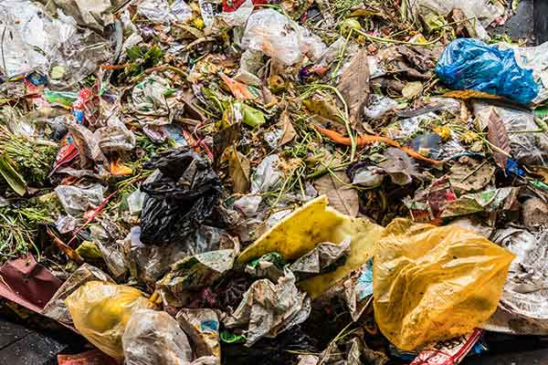
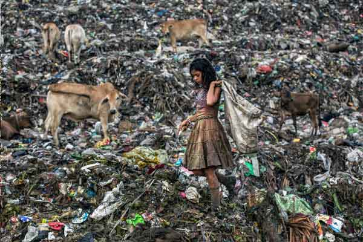
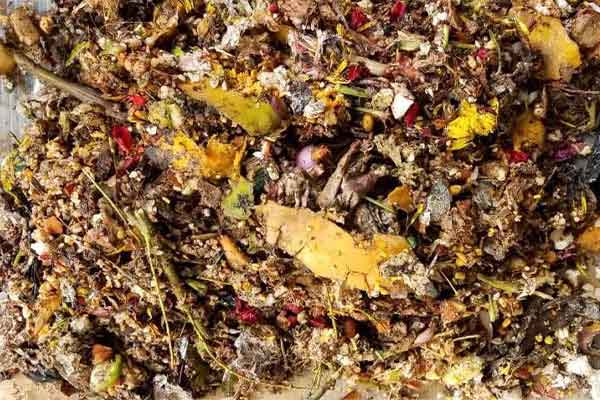
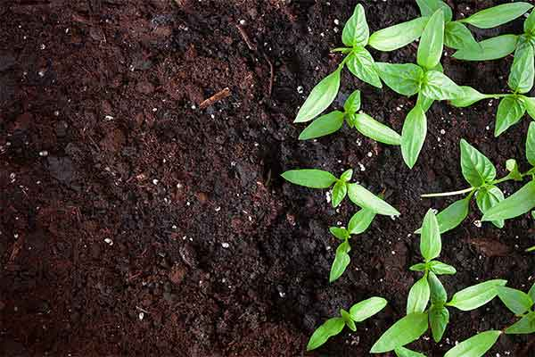
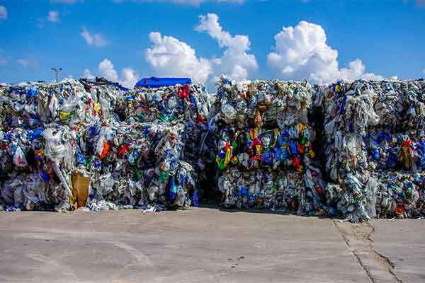
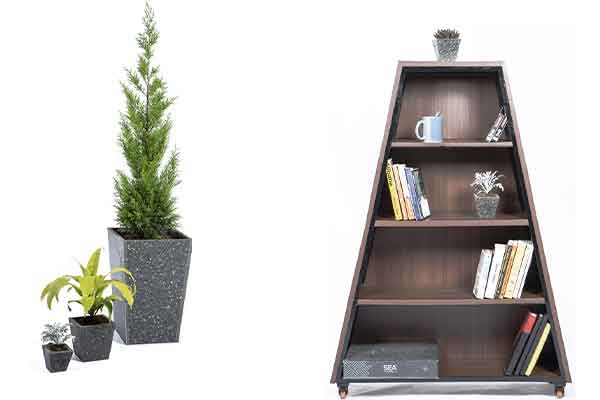
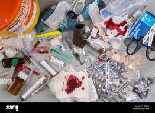
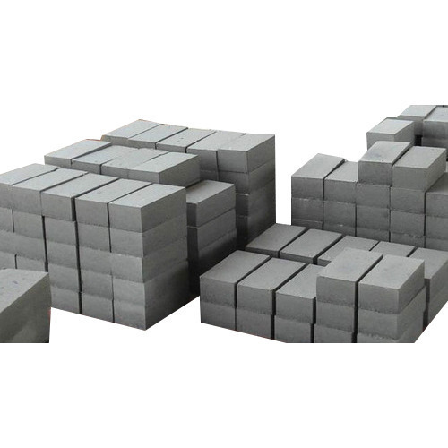
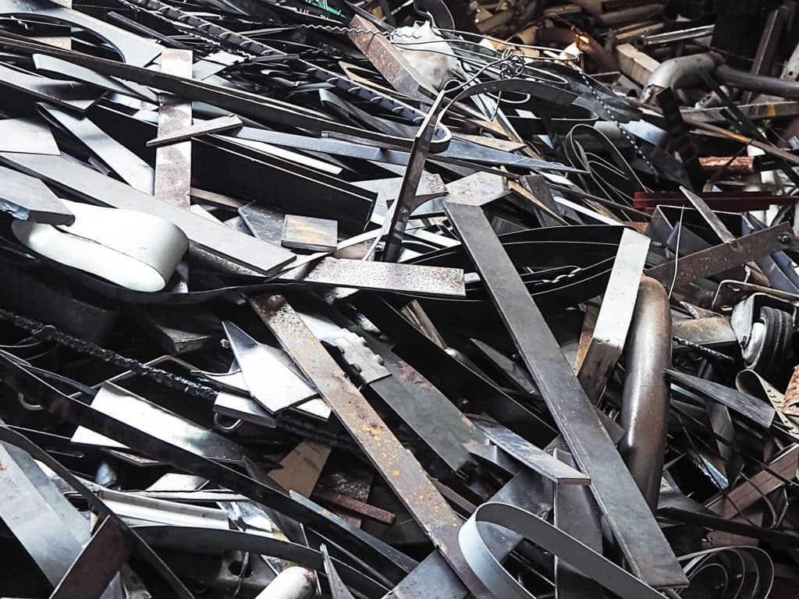
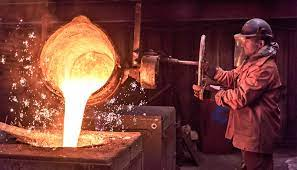

Junk Splitter - World's first completely automated segregation system
Helps you generate value from unsegregated waste by segregating into biodegradable, non-biodegradable,medical and metalic components for recycling.
- How it works

This is mixed municipal solid waste or mixed waste also known as unsegregated waste. This is the waste lying on the roads and outside our houses. This is the waste which is being burnt or dumped in the landfills everyday.
It contains food waste, plastics, cardboard, meat, blood, diapers, sanitary napkins, metals, stones and everything else that you can possibly imagine.

It is humanly impossible to manually separate food waste from plastics, cardboard, sanitary napkins etc.
Even if it was possible, who would put his or her hands into this stinking waste?
Even if someone was ready to put his or her hands is it humane?
Absolutely Not! - IT IS A HEALTH HAZARD
With the objective to protect mother earth and provide dignity of labour, we designed the world's first (patented) completely automated mixed municipal waste segregation system - TrashBot.

Junk Splitter segregates this impossible mixed waste without humans touching it into two components.
1. Biodegradables
This consists of food waste and wet waste.

The biodegradables can be converted into
a. manure by composting
or
b. biogas by biomethanation

2. Non-biodegradables
This consists of plastics, polymers, aluminium foils and the likes.

The nonbiodegradables can be recycled into
a. recycled sheets (WoW Boards) similar to plywood or particle boards using TrashCon's proprietory recycling technology which can then be converted into beautiful furniture items called WoW Products
or
b. plastic roads
or
c. RDF (fuel) for cement kilns.
Thus, ensuring a completely Zero Waste System.

3. Medical Waste
This consists of mask,surgical gloves and the likes.

Medical waste can be converted into
ECO BRICK! It helps spreading awareness and creating an enabling environment for accelerating cleaner production techniques. This is expected to contribute towards India's growth towards a Green Economy.

4. Metalic Waste
This consists of pieces of metal that are the debris or waste resulting from the processing.

Metalic Waste can
Again be melted and moulded into desired shapes.
Impact Per Ton With Every TrashBot
 40,000 People Everyday
40,000 People Everyday
 Helps Prevent 22 Diseases
Helps Prevent 22 Diseases
1600 Tons Carbon Emissions Prevented Everyday
146 Tons GHG Emissions Prevented Everyday
 54 Acres Landfill Area Saved Everyday
54 Acres Landfill Area Saved Everyday
Who Can Use It
- Villages
- Zila or Districts
- Town Municipal Corporation
- City Municipal Corporation
- Airports